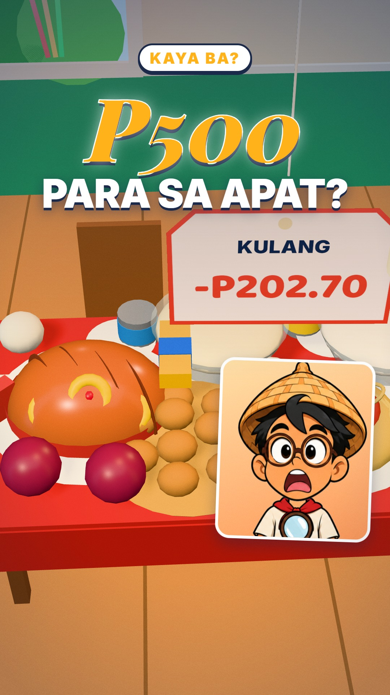
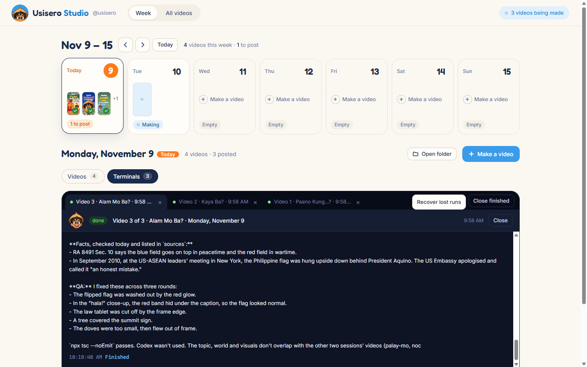
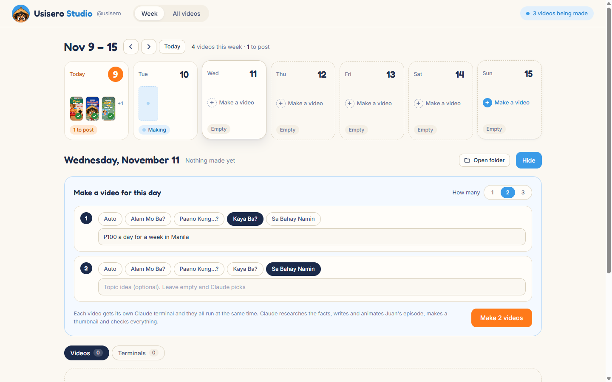
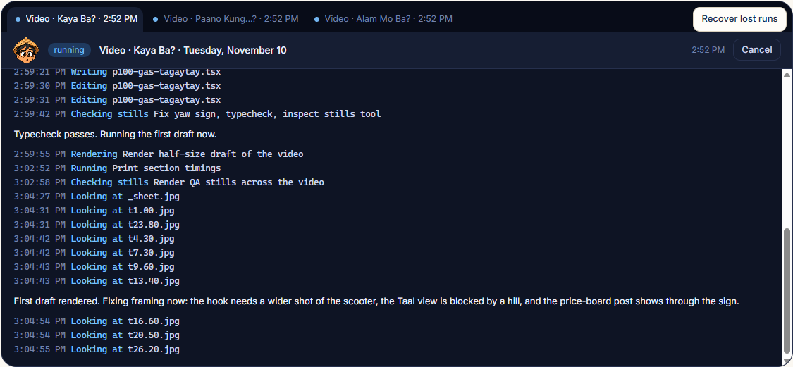
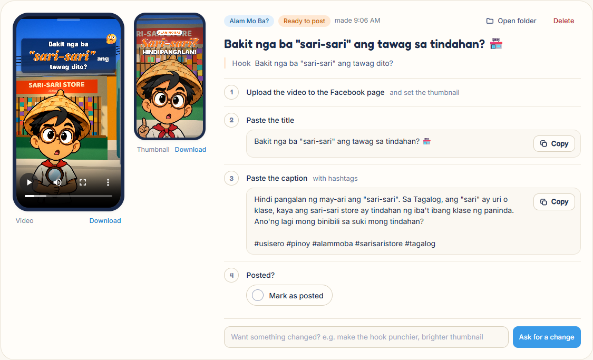
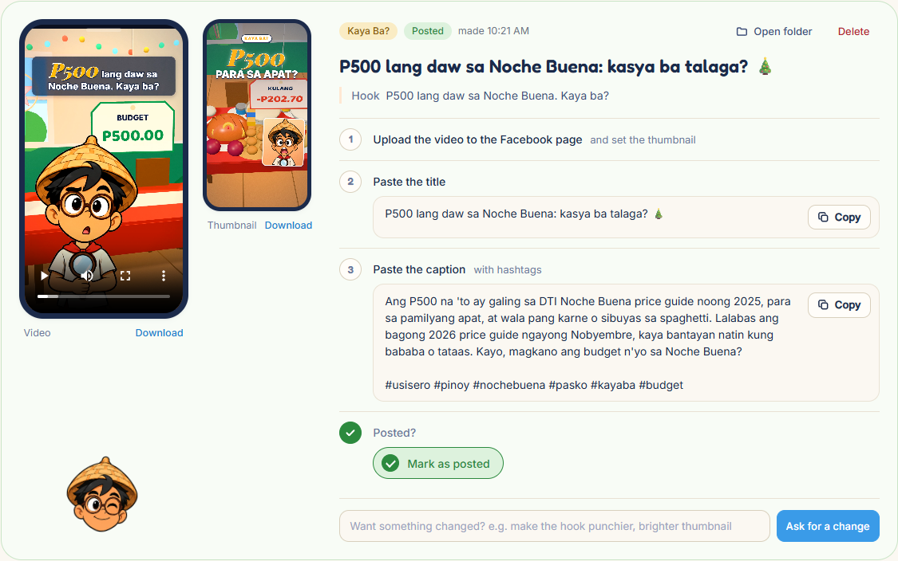
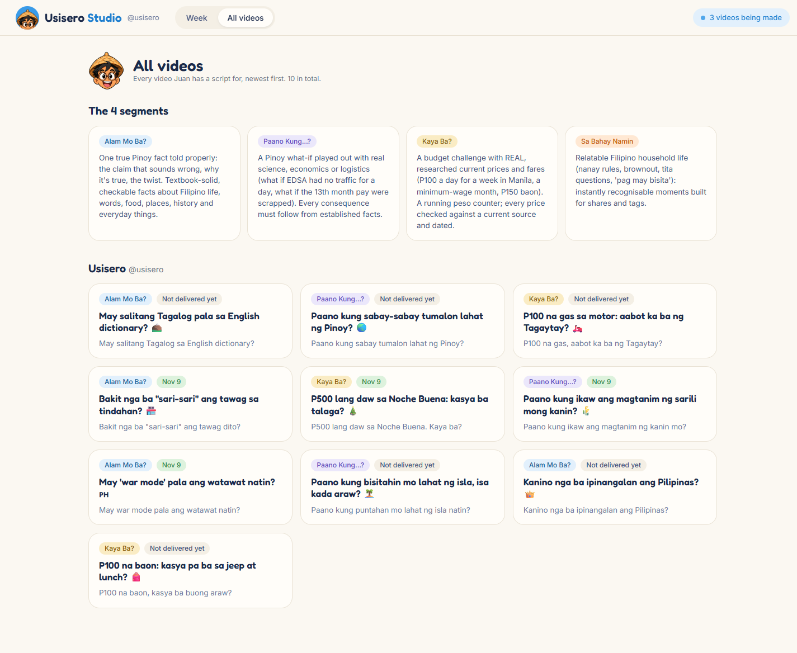
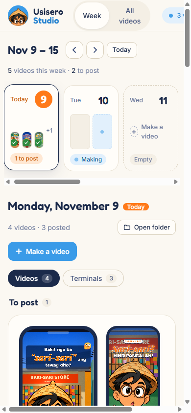
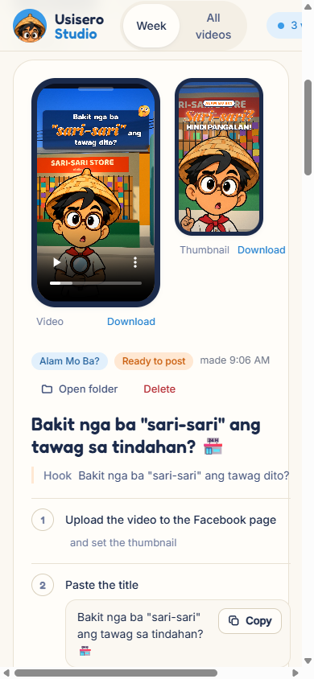
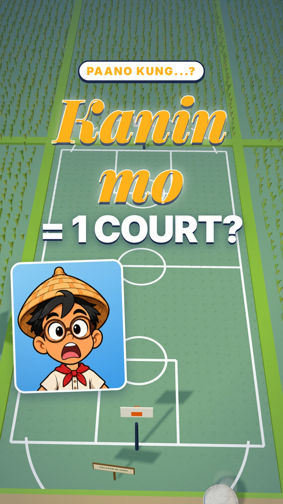

A friendly week planner for a one-person Pinoy Facebook page. Each "Make" starts a headless Claude Code run that researches the topic, writes the Taglish script, builds a 3D world, animates host Juan, renders the video and hands back a post that's ready to paste.


Usisero posts relatable, true Pinoy content in natural Taglish. Behind every 30-second reel there's research, a script, a storyboard, a 3D world, music, a render, QA and the Facebook copy. One person can't do all of that every day by hand.
"Make a video" should mean exactly that: one button, then a video I can post.
The brief behind the StudioThe owner of the Usisero page: a solo creator who plans the week, wants to see the work happening and posts by hand to Facebook. They don't want to live in a terminal.
Studio is a small Node server and a plain-DOM UI. Every feature maps to one real step of running the page: plan, make, watch, review, post.
Seven day tiles show each day's thumbnails, a green tick on what's posted and one status chip. Today is the orange circle. A blank day just says "Make a video".
Nov 9 – 15 · 4 videos this week · 1 to post
For each video, choose a segment or leave it on Auto, and add a topic idea if you have one. The orange button starts one Claude terminal per video and they all run at the same time.
"Each video gets its own Claude terminal and they all run at the same time." The panel's own hint.

The stream-json output of each claude -p run is turned into readable verbs: Writing, Rendering, Checking stills, Looking at. Juan's face shows the run state. A finished run can be continued by typing a message, and runs whose terminal was closed can be brought back.
"First draft rendered. Fixing framing now..." Claude's own notes appear between the steps.

The video plays in a phone frame next to its thumbnail. On the right are the steps you actually do on Facebook: upload, paste the title, paste the caption with hashtags, then mark it as posted. Each one has a Copy button.
Ask for a change · "make the hook punchier, brighter thumbnail" starts a Claude run that fixes and re-renders just that video.

Ticking "Mark as posted" turns the card green and Juan stamps it with a wink. The day tile gets its tick, and once every video is out the day reads "Everything for this day is posted. Galing!"

All videos lists every spec Juan has a script for, newest first, with its segment and the day it was delivered. It's the easy way to rotate segments and avoid repeating a topic.
"Every video Juan has a script for, newest first. 10 in total."

Eight steps. Only one of them runs on its own, and it's the big one: while Claude makes the video you can close the tab and the work keeps going.
Tap a tile in the week strip. Past days are greyed, today is orange.
How many videos, a segment for each (or Auto), an optional topic idea.
"Started. You can close this tab; the work keeps going."
Research → script → storyboard → 3D world → music → render → stills QA.
Watch the reel on the card. Not quite right? Ask for a change.
Upload video.mp4 to the page and set the thumbnail.
Title and caption with hashtags, one Copy button each.
The card goes green, the tile gets a tick. Galing!
The layout is tuned for a 1180 px planner on the desktop where the studio runs. Below 1000 px the week strip becomes a swipeable row and each card stacks into a single column.


The week strip scrolls sideways with snap, the handle and legend drop away, and the posting checklist stacks under the two phone previews, so you can check a post from the couch.
Studio's runs call the project's own pipeline, node tools/make.mjs <id> --day. Every video is its own Remotion composition with a 3D world built in code, and the files land in that day's Outputs folder.
shorts/<id>.jsonsrc/shorts/<id>.tsxtools/music.pyvideo.mp4 · thumbnail.jpg · upload.txt
From studio/ui/app.css: flat colour and no gradients, hairline borders for structure, and soft shadows only on what is lifted (the selected day, menus, the toast). Sky blue means act, orange means it needs you, green means done.
#fbf8f2#fffdf9#e9e2d4#1b2a4a#3a9be8#ff7a1a#2c8a3e#0e1424Studio already covers the daily loop. These are the gaps that show up when you use it every day.
On a 390 px phone the "videos being made" pill pushes the header wider than the screen. Wrap or shorten it there.
Show which segments the week already has, so Auto can rotate on purpose and the planner can see the mix.
Next to "Posted", a place to note reach and comments per video, so the best hooks feed the next topics.
http server + plain-DOM UI, at localhost:4410claude -p, stream-json, Opus)Ikaw, ano'ng susunod na video?
Usisero Studio · case study · November 2026